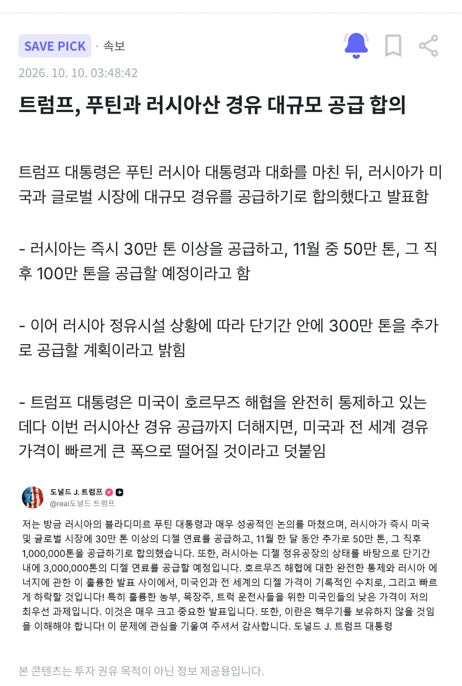

트럼프(Trump)가 아니라 트람프(Трамп) 였나;;;;

트럼프(Trump)가 아니라 트람프(Трамп) 였나;;;;
'푸틴 좆집'
레드팀끼리 국가교역 확대가 이상합니까?
근데 러시아도 기름 없다더니
역시 혼돈의 마법사
병신 노머고새끼 언제 뒤지냐
민주주의의 장점: 독재자를 끌어내릴수 있다
언제 끌어내리냐고
우리 욕하던 유럽과 우크라이나 여러분 이제 다른 욕할 나라가 생겼습니다
푸틴이 영상 10초 보냈나보네
트럼노프스키 ㄷㄷ

30만 톤 물량(약 224만 배럴) = 미국 전체 하루 소비량의 약 13~15시간분
50만 톤 물량(약 373만 배럴) = 미국 하루 소비량의 약 1일 미만(약 22시간)
100만 톤 물량(약 746만 배럴) = 미국의 약 1.8일 치 소비량
결론 말만 번지르르 하지 저 정도론 기름값 별로 티도 안날듯?
그리고 연료량을 사람들이 별로 사용하지도 않는 톤 단위 사용과 해결 될꺼라는 소리를 덧붙였서 엄청 많는 양의 물량처럼 느끼게 하려는 의도도 보이고...
게다가 러시아도 지금 연료 부족으로 허덕 대는 상황에 중간선거용 뻥카 일 가능성이 큰데 기름값 오르는걸 자기가 해결 했는데 우크라이나가 러시아 정유시절 공격해서 죽쒔다고 할려는거 같음
또 지난번에 미국 농부들 표심 끌어내려고 캐나다에사 90% 수입하는 비료 주재료인 팟애쉬를 벨라루스에서 싸게 구입하는 거래를 성사 했다는데 하루도 안되서 벨라루스에서 서방에 수출할 만큼의 양이 없다고 못박은거라 같은 맥락의 뻥카 일듯?
이 얘기 하려고 댓글창 켰는데 이미 장문으로 남겨주셨네 ㅋㅋ
이걸 갖고 ”대규모 공급“ 같은 소리를 하는게 우습지
이게 트럼프의 탈출구냐고 ㅋㅋㅋ